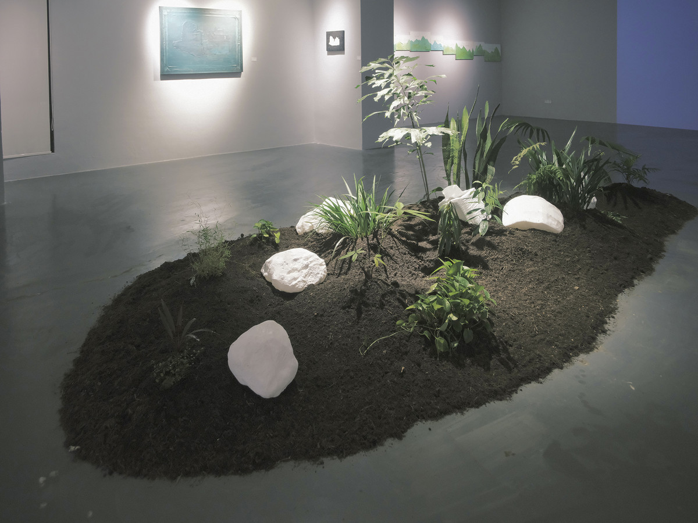
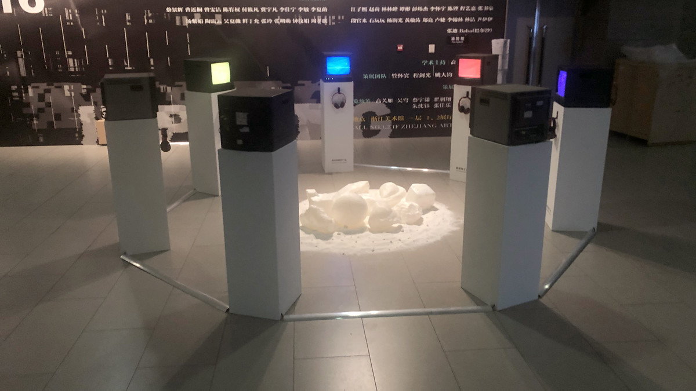
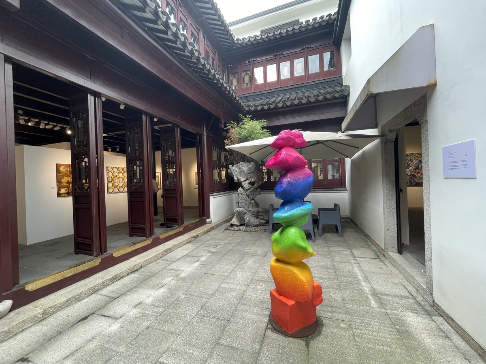
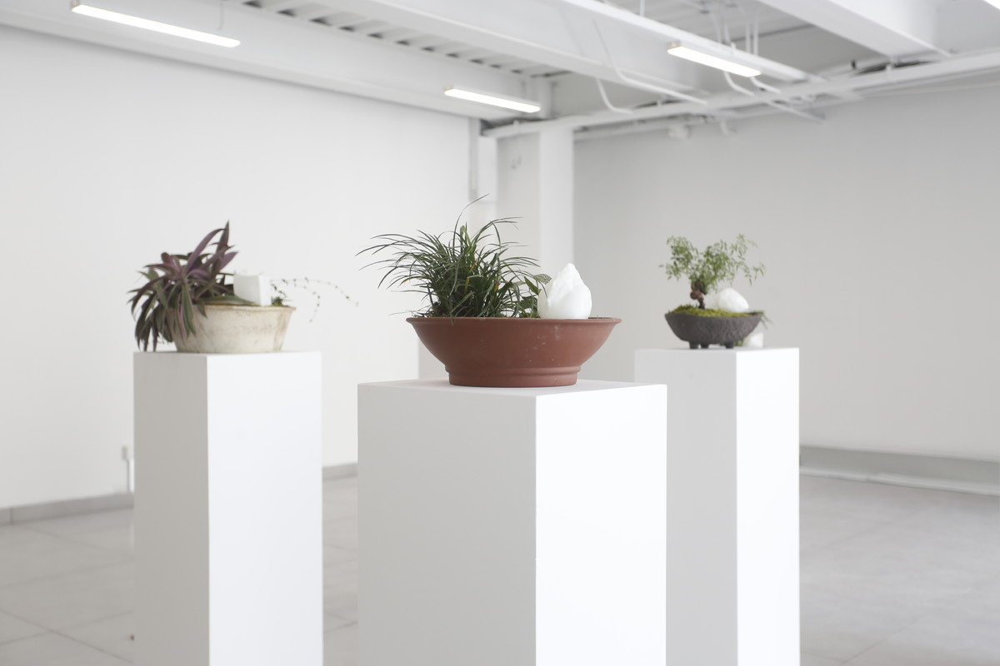

广场系列 | THE SQUARE

树脂材料打印，植物，泥土，尺寸可变，2023
esin print, plant, soil, variable size, 2023
将世界上爆发过革命的七个广场上的小石子收集过来，放大成石头并在展厅里围合成一个“独立广场”。七个监视器里飘扬着七种颜色的旗帜，耳机里播放这七个国家的语言对广场的描述。作品中这些石头的图像数据通过互联网和社交媒体，在网友的协助下得以收集。它们虽然来自真实的广场，但最终呈现在展厅里的是数字模型物，它们与电脑绘制的旗帜、人工AI的声音共同构建的是一个“算法世界”里的“广场”。
Collect pebbles from seven revolutionary squares around the world, enlarge them into stones, and form an "Independence Square" in the exhibition hall. Flags in seven colors fluttered from seven monitors, and headphones played descriptions of the square in the languages of the seven countries. Images of the stones were collected via the Internet and social media with the help of users. Although they come from the real square, the final objects presented in the exhibition hall are digital models. Together with the flags drawn by the computer and the sounds of artificial AI, they create a "square" in an "algorithmic world".
这七个广场分别是：光州市政厅广场、巴黎协和广场、基辅独立广场、泰国暹罗广场、墨西哥宪法广场、开罗解放广场、马德里太阳门广场。
The seven squares are: City Hall Square in Gwangju, Place de La Concorde in Paris, Independence Square in Kiev, Siam Square in Thailand, Syntagma Square in Mexico, Tahrir Square in Cairo, and Puerta del SUNS Square in Madrid.

浙江美术馆，杭州
Zhejiang Art Museum, Hangzhou

过云楼，苏州
Guoyunlou Art Museum, Suzhou

它山艺术中心，苏州
Tashan Art Center, Suzhou